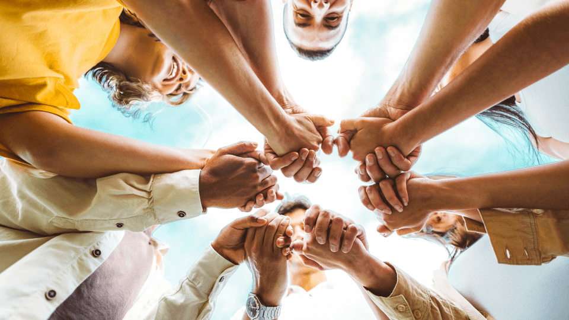
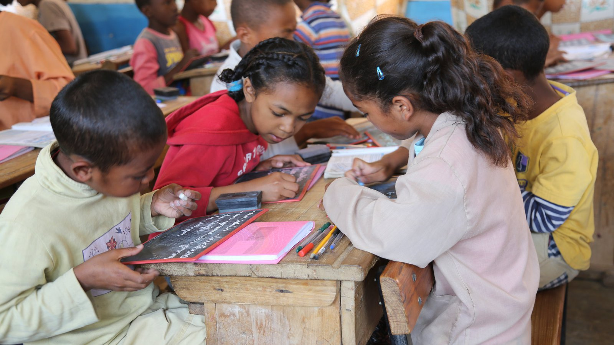
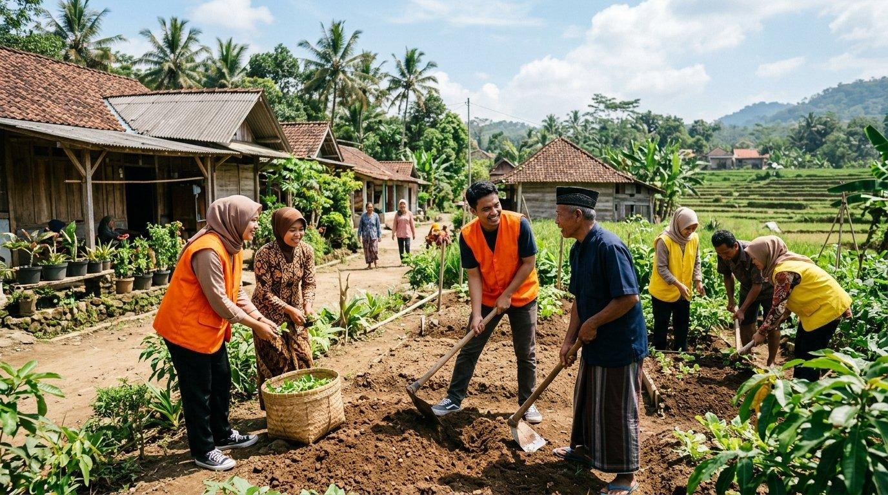
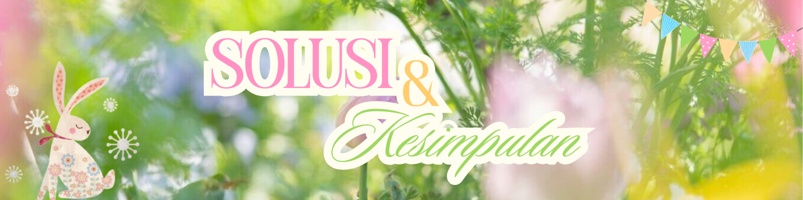
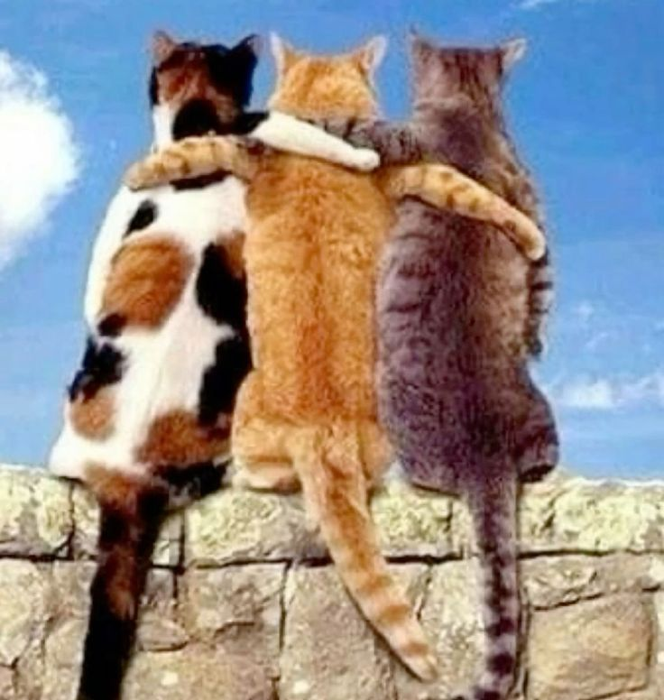

.jpg)



untuk mengatasi kesenjangan kita semua harus berkerjasama untuk mengatasinya
Meningkatkan kualitas dan pemerataan fasilitas pendidikan, khususnya di daerah terpencil, agar setiap anak mendapatkan kesempatan belajar yang setara.
1Mendukung UMKM, membuka kesempatan kerja yang layak, serta memperluas akses masyarakat terhadap layanan keuangan.
2Membangun fasilitas umum yang ramah bagi penyandang disabilitas serta memastikan semua orang dapat mengakses layanan publik.
3Mencegah diskriminasi dan kekerasan terhadap kelompok rentan maupun minoritas serta memastikan perlindungan hak setiap individu.
4Meningkatkan akses masyarakat terhadap air bersih, pangan, kesehatan, dan perlindungan sosial.
5Memperkuat kolaborasi bilateral, regional, dan multilateral untuk berbagi pengetahuan, teknologi, sumber daya, serta kebijakan.
6
Kesenjangan merupakan permasalahan yang masih dihadapi Indonesia maupun berbagai negara di dunia. Permasalahan ini tidak hanya berkaitan dengan perbedaan ekonomi, tetapi juga ketidakmerataan akses terhadap pendidikan, kesehatan, fasilitas umum, serta perlindungan hak setiap individu.
Dari SDGs 10, kita semua berusaha menciptakan masyarakat yang lebih adil dan inklusif dengan memastikan setiap orang memiliki kesempatan yang sama tanpa memandang latar belakang, kondisi ekonomi, maupun identitas mereka.
Tetapi, mengurangi kesenjangan bukanlah tanggung jawab satu negara saja. Ada perlunya kerja sama bilateral, regional, multilateral, dan internasional untuk saling berbagi pengetahuan, sumber daya, dan juga membentuk kebijakan yang mendukung pemerataan kesejahteraan.
Keterlibatan Indonesia dalam program INKLUSI bersama Australia, ASEAN Consensus, G20, dan kerja sama dengan PBB menunjukkan bahwa Indonesia turut berperan dalam mewujudkan pembangunan yang lebih inklusif.



.png)